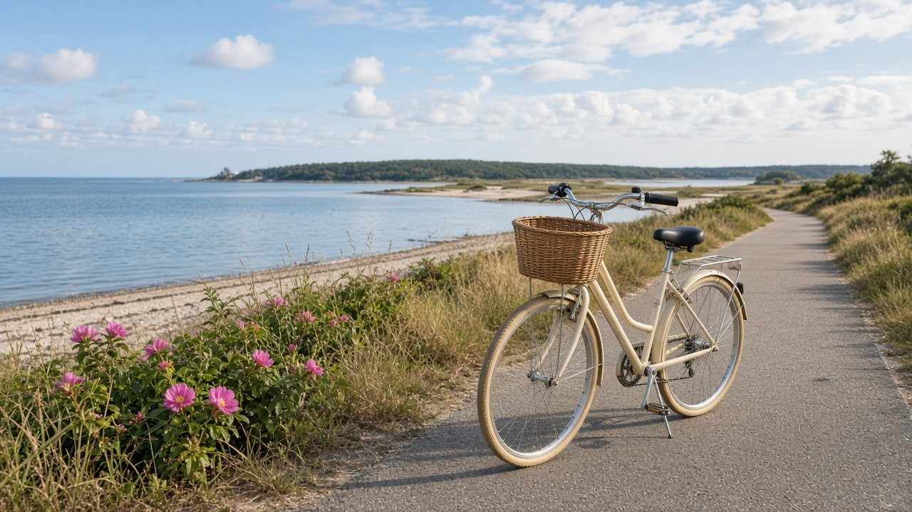

Think you know Falmouth? Open the fold-out map in the middle of this issue and put a finger on a square. Letters A through F run across; numbers 1 through 4 run down. The front is Downtown and Main Street. The back is Main Street and Woods Hole. Every story here is a real, checked place, and each one ends with a grid square.
A town since 1686
The Massachusetts Secretary of the Commonwealth records that English colonists settled Falmouth in 1660 and that the town was incorporated in 1686. The Village Green, where Main Street meets Palmer Avenue and Town Hall Square, is still the civic heart of the village. First Congregational Church, gathered in 1708 and moved to 68 Main Street in 1857, looks over the Green; a Paul Revere bell in its steeple still rings. Just up Palmer Avenue, Falmouth Museums on the Green keep the public record, including the c. 1790 Dr. Francis Wicks House and the c. 1730 Conant House.
Find it Downtown side A1 (the Green; also drawn on the Woods Hole side at C2). Town Hall is Downtown B2. The museums are Downtown B1.
From sea to shining sea
Katharine Lee Bates, who wrote “America the Beautiful,” was born on August 12, 1859, at 16 Main Street, in the Congregational parsonage. The 1810 house is a private residence today; please view it from the sidewalk. Bates wrote the poem after a visit to Pikes Peak in 1893, taught at Wellesley College, and is buried in Oak Grove Cemetery in Falmouth. A bronze statue by Lloyd Lillie, portraying her at 34 at Pikes Peak, stands on the lawn of Falmouth Public Library at 300 Main Street. It was dedicated on August 12, 1988, during the town’s tricentennial.
Her famous line named the Shining Sea Bikeway, a 10.7-mile paved path on the old railroad bed that carried trains between Falmouth and Woods Hole from 1872 to 1965. The town dedicated the first stretch in 1975 and extended the trail to North Falmouth in 2009. It is the only bikeway on Cape Cod that runs alongside the sea.
Find it The birthplace is Downtown side B1 (private). The statue is Downtown C2. The downtown bikeway access is Downtown A2; the Woods Hole stretch is Woods Hole side B3.
Her famous line, “from sea to shining sea,” gave the bikeway its name.

Science, and a wreck in the dark
Woods Hole is one of the country’s major marine-science centers. WHOI, the Marine Biological Laboratory, and NOAA’s Woods Hole Science Aquarium share the village waterfront. Spencer Baird established a U.S. Fish Commission station here in 1871; a public aquarium was added in 1875, and NOAA calls it the nation’s oldest public marine aquarium, at 166 Water Street. On September 1, 1985, a WHOI–IFREMER expedition led by Dr. Robert D. Ballard and Jean-Louis Michel found the wreck of RMS Titanic. WHOI’s vessel Knorr, using the system Argo, followed a debris trail and identified a Titanic boiler, then returned to Woods Hole on September 9, 1985, to a waterfront welcome. The aquarium is closed through early 2027 for foundation repairs.
Find it Woods Hole side A3 (the aquarium). WHOI, the Marine Biological Laboratory, and Eel Pond are in A4.
A light on the sound
Nobska Light stands at 233 Nobska Road in Woods Hole, where Buzzards Bay, Vineyard Sound, and Nantucket Sound meet, with Martha’s Vineyard and Nonamesset Island in the view. The light station was established in 1828; the present iron tower, with a brick lining, was built in 1876, automated in 1985, and listed on the National Register of Historic Places in 1987. The Town of Falmouth and the Friends of Nobska Light care for the station. The Road Race course passes the light in its first mile.
Find it Woods Hole side B4.
Seven miles, every August
The Falmouth Road Race began on August 15, 1973, the 40th birthday of Woods Hole bartender Tommy Leonard, who organized a run from the Cap’n Kidd on Water Street to Falmouth Heights. The seven-mile course runs over the Eel Pond drawbridge, past Nobska Light, along Surf Drive, around the Inner Harbor, and up into the Heights. The early finish was at the Brothers Four, across from the Casino by the Sea; both buildings are gone. Today runners finish at the ballfield in the Heights.
Find it The start is Woods Hole side A3. The finish is Downtown side E3.
A summer mansion in the woods
Highfield Hall, at 56 Highfield Drive, was built in 1878 for the Beebe family of Boston, a rare surviving Stick-style Queen Anne house designed by architect Carl Fehmer. A second mansion on the estate, Tanglewood, was demolished in 1977. In 1972, Josephine and Josiah K. Lilly III bought the estate and gave nearly 400 acres of Beebe Woods to the town. A community restoration later brought the hall back as a public place for art, music, and gardens. The grounds are open daily, dawn to dusk.
Find it Downtown side A1.
Homes you can only reach by boat
In Great Harbor, Woods Hole, a handful of house floats — cottages on pontoons — form a small summer community. Town regulations allow them to be moored within 600 linear feet of Ram Island or Devil’s Foot Island from mid-April to mid-November, and in Eel Pond for winter storage. About 14 to 19 floats have been described, the only community of its kind on Cape Cod. They are private homes: look from the public waterfront, and do not board or approach them.
Find it Woods Hole side A4, just off the illustrated shore toward Ram Island and Devil’s Foot Island.
A neighborhood with a runway
Falmouth Airpark is Massachusetts’ only residential fly-in community, in East Falmouth off Fresh Pond Road, north of Route 28. Homes sit along grass taxiways around a 2,298-by-40-foot runway, so residents can taxi an airplane from a hangar to the strip. The homeowners association is at 67 Airpark Drive. The airport (FAA identifier 5B6) is privately owned and listed as open to the public; the streets are a private neighborhood, not a walking tour. It sits off the illustrated pull-out.
Find it Off the pull-out map — East Falmouth.
The working harbor
Falmouth Marine & Yachting Center, at 278 Scranton Avenue on Falmouth Inner Harbor, was founded in 1940 as Falmouth Marine Railways. The yard has served local boats for most of a century and, during World War II, work connected with the U.S. Navy. Just down the street, the Flying Bridge Restaurant occupies a waterfront building at 220 Scranton Avenue. Town assessing records date the building to 1958; the Falmouth Chamber of Commerce says the restaurant was established in 1983.
Find it Downtown side D3.
The church that strawberries built
Immigrants from the Azores, Portugal, and Cape Verde turned the sandy soil of East Falmouth into a major strawberry district, and for a time Falmouth was among the largest strawberry producers in Massachusetts. As early as 1919, growers set aside money from berries picked on a peak Sunday of the harvest — “Strawberry Sunday” — to buy land for a church where Mass could be said in Portuguese. In 1921 Rev. Antonio M. Fortuna arrived, and St. Anthony’s Parish was formed. The church at 167 East Falmouth Highway opened on January 1, 1924, and became known as “the church that strawberries built.”
Find it Off the pull-out map — East Falmouth.
St. Anthony’s opened on January 1, 1924, and became known as “the church that strawberries built.”
Where the Casino stood
For much of the twentieth century the Casino by the Sea stood on Grand Avenue in Falmouth Heights, between the ballfield and the beach. The original building went up around the turn of the century (local reporting has used 1901), housed a post office, burned in 1909, and was rebuilt in a Dutch Colonial style by William Tobey. It later held a movie theater, shops, and a bathhouse, and in 1966 it became the Casino by the Sea nightclub and restaurant. It was demolished on November 25, 2003.
Find it Downtown side E3.
Pick a square
That is a lot of town for one map, and it is all still here. Open the pull-out between pages 11 and 16. Pick a square. Go explore.
Sources
Every fact in this feature was checked against the public sources below, which also appear with the individual entries on the Falmouth Stories & History page. Private homes and private waterfront communities are noted in the story so readers know what can be visited and what should only be viewed from a public way.
- First Congregational Church of Falmouth, Our History
- Woods Hole Museum, “The House at Sixteen Main Street” (Spritsail)
- Falmouth Public Library, Special Collections
- Historical Marker Database, Katharine Lee Bates marker
- Smithsonian inventory, Katharine Lee Bates sculpture
- Town of Falmouth, The Shining Sea Bikeway
- WHOI, 1985 discovery of RMS Titanic
- NOAA Fisheries, Visit Woods Hole Science Aquarium
- NOAA Fisheries, Woods Hole Laboratory
- Friends of Nobska Light
- Wikipedia, Nobska Light
- CapeCod.com, Falmouth Road Race history
- Boston Globe, How a bartender dreamed up the Falmouth Road Race
- OnCape Magazine, History Follows the Race
- Highfield Hall & Gardens, History
- Highfield Hall & Gardens, Directions
- Massachusetts Secretary of the Commonwealth, city and town incorporation and settlement dates
- Falmouth Museums on the Green, campus
- Falmouth Museums on the Green, hours and directions
- Cape News, Select Board approves Woods Hole houseboat regulations
- Town of Falmouth, §269-22 House Floats and Houseboats
- AirNav / FAA, Falmouth Airpark (5B6)
- Flying magazine, Falmouth Airpark Shows Off Cape Cod’s Charm
- Falmouth Airpark driving directions
- Falmouth Marine, About
- Falmouth Chamber of Commerce, Flying Bridge Restaurant
- Town of Falmouth assessing record, 220 Scranton Avenue
- Cape Cod Times, End of an era (November 26, 2003)
- Cape Cod Times, Historic bar or eyesore? (1999)
- St. Anthony’s Church history, Falmouth Catholic Community
- New England Historical Society, The Portuguese Farmers Who Made Falmouth Strawberries Famous
- Woods Hole Museum, Strawberry Farming (Spritsail)